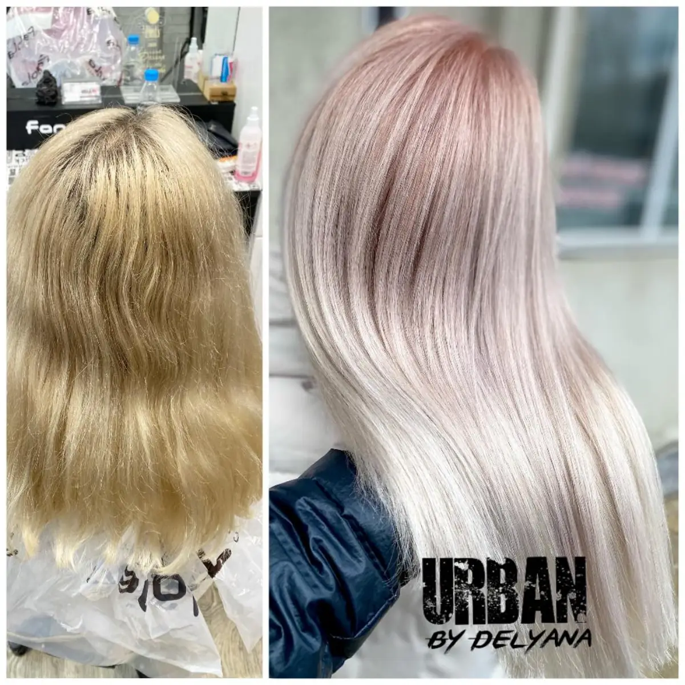
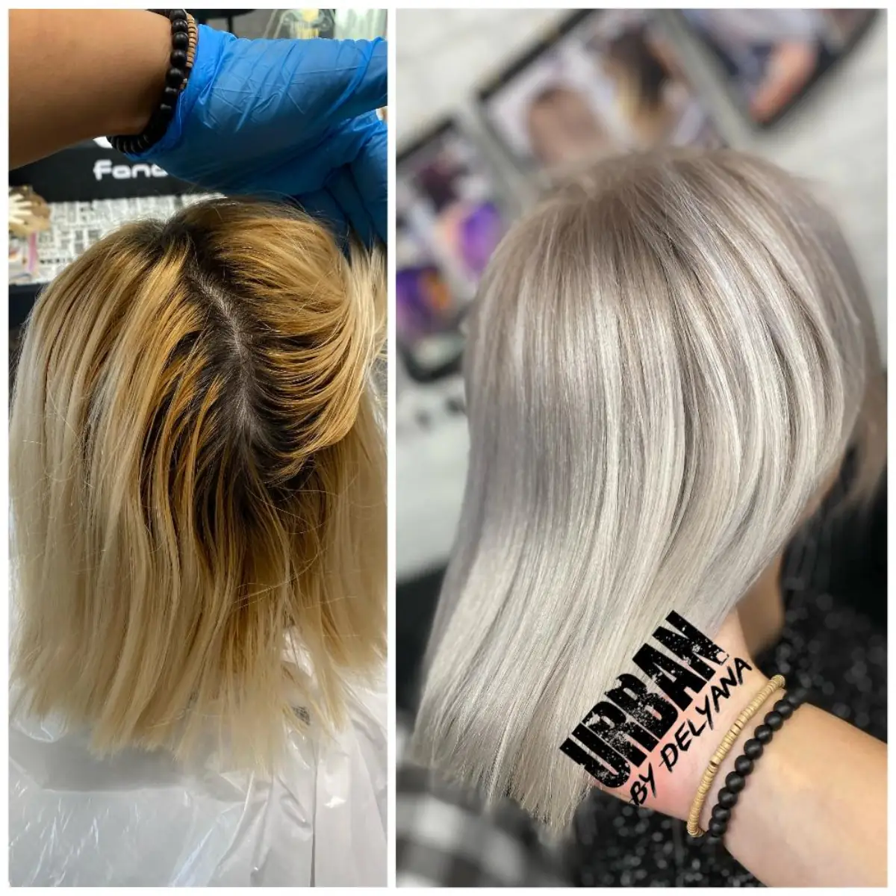
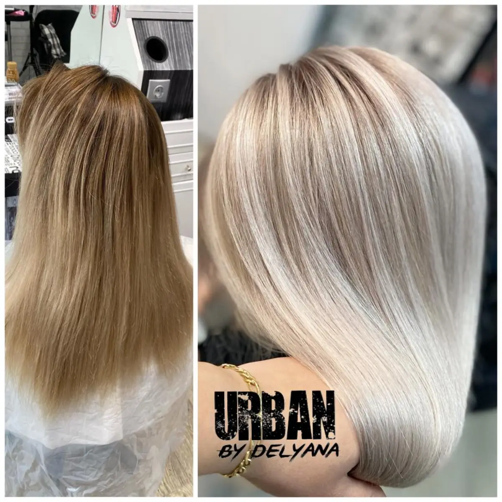
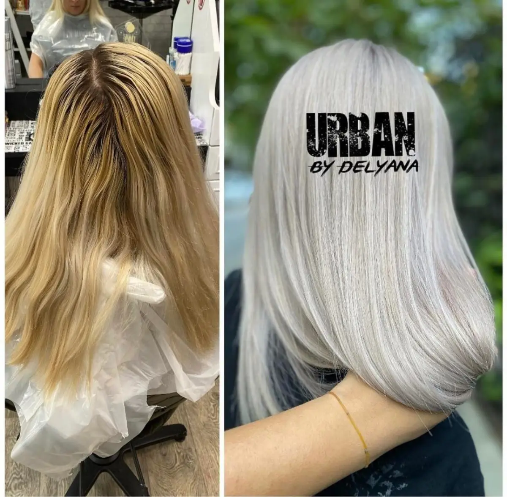
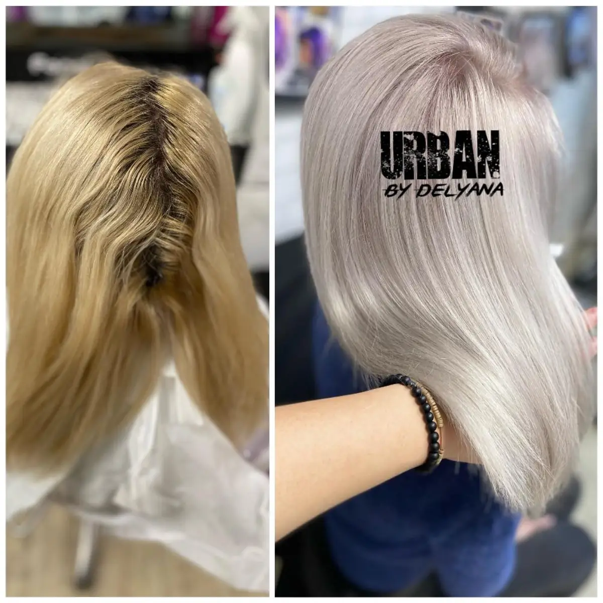
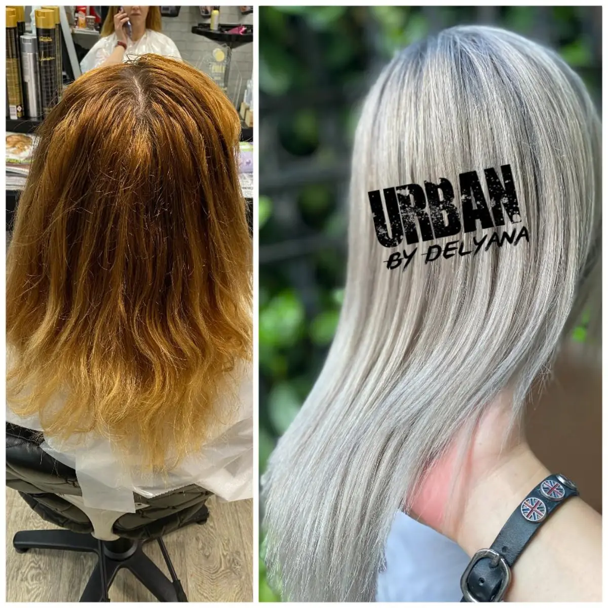
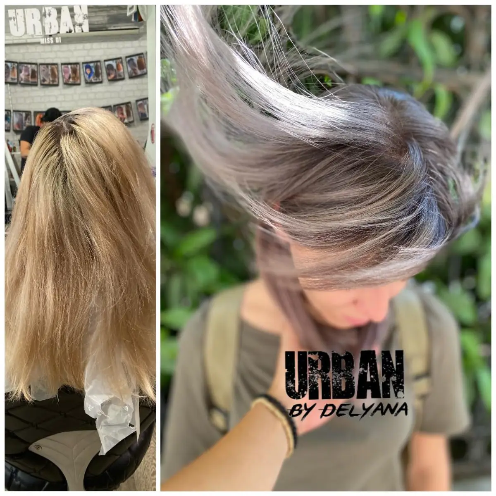

From brass to seamless platinum.
Five hours of patient lift, layered toning and a custom bond protocol. Built around the integrity of the hair, never against it.
- Time
- 5h 40m
- Service
- Lift & Tone
- Finish
- Cool Platinum
Every transformation below is the same client, the same chair, the same day. No filter. No retouch.
Five hours of patient lift, layered toning and a custom bond protocol. Built around the integrity of the hair, never against it.


Painted by hand with a soft root shadow. Dimension that lives in the light, not on the surface.


A cool, modern ash painted to follow the bone structure. Wearable in candlelight and in daylight.


A custom lilac smoke laid over a prepared canvas. Calibrated to the client's complexion under three light sources.


A subtle shift. Cooler at the root, warmer through the ends. The kind of color that reads as natural until you look twice.


Neutralised warmth, deepened root and a glossing finish for the kind of brunette that catches the light without breaking it.


Smoky lights diffused through a deeper base. The color sits low and lets the cut speak.

A complete reset. Lift, tone, shape. Designed once and finished in a single sitting.